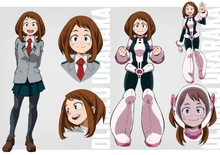

Очако Урарака
Очако Урарака
- Пол: ♀ Женский
- Рост: 156 см.
- Возраст: 16
- Группа крови: B(|||)
- Родился в: Японии
Очако Урарака (Uraraka Ochako), также известная, как Уравити ('Urabiti') — ученица класса 1-A в академии Юэй, обучающаяся на Профессионального Героя.
Я стану героем и непременно заработаю кучу денег, и тогда у моих родителей будет жизнь, которой они заслуживают!
Внешность
У Очако каштановые волосы до плеч и большие круглые карие глаза. Спереди у неё две длинные пряди волос, а сзади - короткая стрижка боб. На кончиках пальцев у неё есть специальные подушечки, похожие на подушечки лап животных, использующиеся для активации её причуды.

Её костюм - облегающий с отделёнными рукавами, сапогами до колена на каблуках, поясом, шлемом, воротником и толстыми круглыми браслетами с ручками. Аксессуары предназначены для нажатия на её точки акупунктуры с целью уменьшения недостатка её причуды.
Личность
Очако — дружелюбный, энергичный человек, позитивно настроенный по отношению ко всему. Она волнуется по мелочам и имеет привычку принимать всё близко к сердцу. Иногда она может быть непреднамеренно бестолковой. Несмотря на это, если ситуация того требует, девушка становится крайне решительной, целенаправленной и в некотором смысле пугающей, что может стать неожиданностью для окружающих. Когда дело доходит до её выбранного пути в качестве героя, она непоколебима даже перед лицом превосходящих сил.
Она также довольно честна, решив не скрывать своё стремление к героизму в первую очередь из-за денег, несмотря на смущение. Девушка делает это с гордостью, зная, что это нужно на благо её родителей.
Причуда
 Невесомость (Zero Gurabiti): причуда Урараки даёт ей возможность манипулировать гравитацией. У неё есть 5 маленьких подушечек на кончиках пальцев, коснувшись всеми пятью подушечками, она может полностью лишить цель своего веса, хотя эта способность имеют свои ограничена. Если вес объекта превышает три тонны то это может вызвать тошноту. Но наибольшую сложность представляет то, чтобы сделать невесомой себя, так как это действие мгновенно вызывает сильнейший приступ рвоты.
Невесомость (Zero Gurabiti): причуда Урараки даёт ей возможность манипулировать гравитацией. У неё есть 5 маленьких подушечек на кончиках пальцев, коснувшись всеми пятью подушечками, она может полностью лишить цель своего веса, хотя эта способность имеют свои ограничена. Если вес объекта превышает три тонны то это может вызвать тошноту. Но наибольшую сложность представляет то, чтобы сделать невесомой себя, так как это действие мгновенно вызывает сильнейший приступ рвоты.